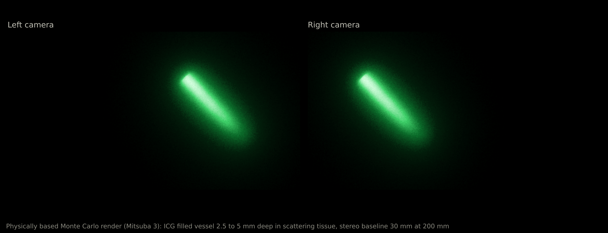
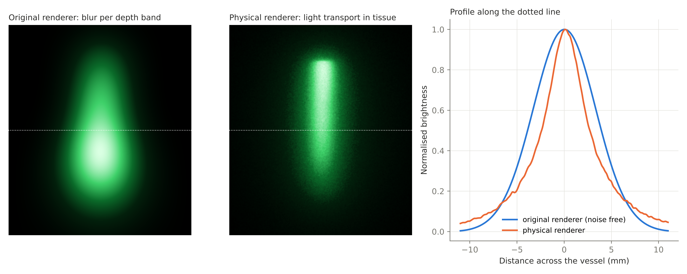
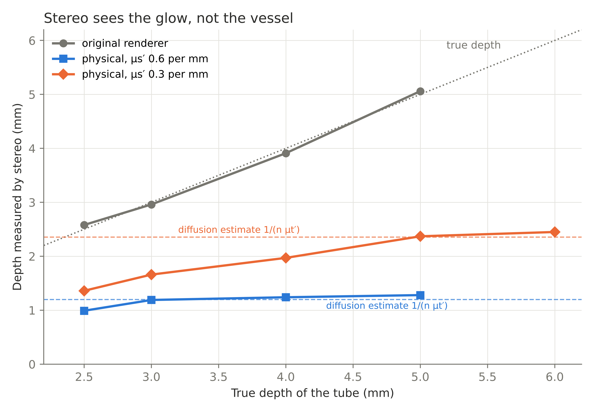
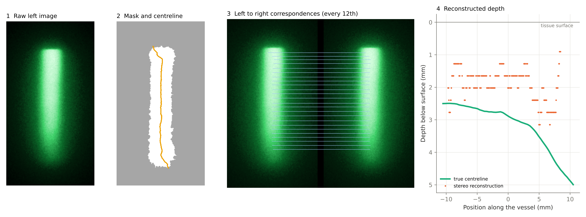
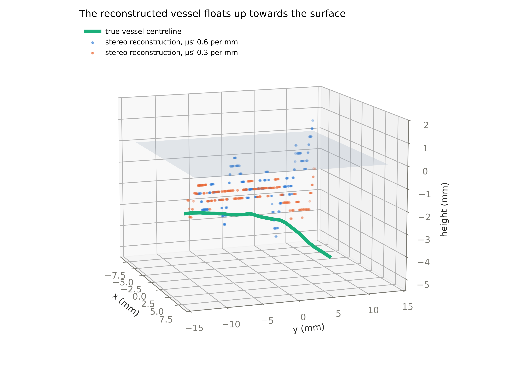
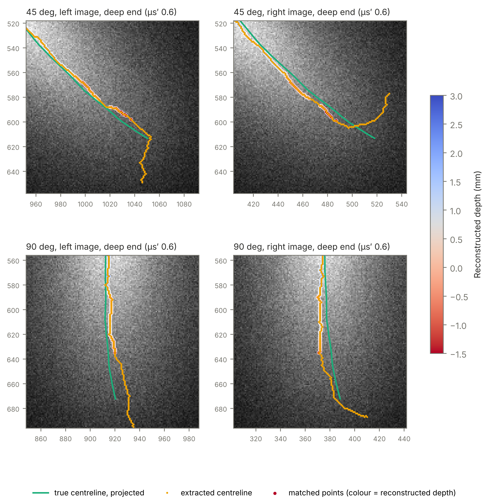
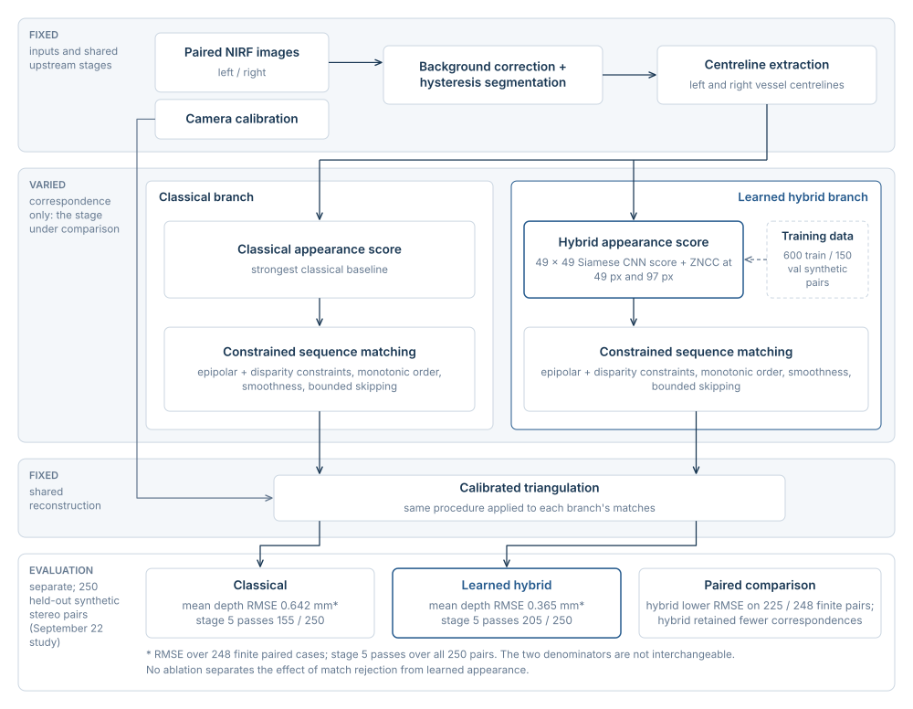
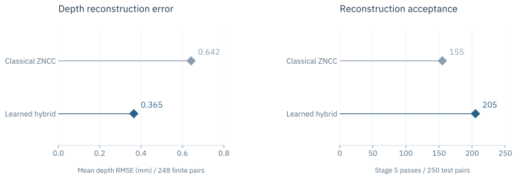

Stereo NIRF vessel reconstruction
Stereo reconstruction under controlled correspondence and physically based light transport.

The research question
How do correspondence and light scattering affect the vessel depth recovered from stereo fluorescence images?
A stereo NIRF reconstruction study that separates correspondence performance from the apparent-depth bias introduced by scattering in physically based simulations.
How image formation changes stereo reconstruction

Matched geometry
The comparison uses the same vessel geometry in the original blur-per-depth renderer and in physically based light transport. The brightness profile exposes differences in the image presented to the reconstruction pipeline.
Two error sources
The depth experiments examine apparent-depth bias, while the deep-end overlays test centreline extraction. Keeping these diagnostics separate avoids assigning every reconstruction error to scattering or to correspondence.
What the work shows
Apparent depth depends on the image-formation model

Reconstruction from raw image to depth

Three-dimensional reconstruction under two scattering settings

Diagnosing centreline extraction at the deep end

Earlier synthetic benchmark / learned correspondence
This earlier test used the original synthetic image-generation regime: 600 training, 150 validation and 250 held-out stereo pairs. It compares matching costs within shared reconstruction stages. It is separate from the light-transport experiments above.


Rendering changes the depth-recovery problem
The like-for-like vessel images differ despite sharing geometry: the original renderer blurs depth bands, while the Mitsuba simulation models light transport. Their normalised cross-vessel profiles show that a pipeline tuned to one image distribution is not automatically calibrated for the other.
The plateau is conditional on scattering
For the straight-tube cases shown, the original renderer tracks true depth, while physically rendered images produce shallower stereo depths. At reduced scattering 0.6 per millimetre, the curve levels near 1.2 mm; at 0.3 per millimetre it approaches roughly 2.4 mm. These are results for the displayed simulation settings, not a universal tissue-depth limit.
Deep-end diagnostics isolate an additional failure
The 45° and 90° overlays compare extracted centrelines with the true projected path in each camera. Drift in the dim deep-end region can change disparity and yield nonphysical depths. This extraction failure is distinct from the apparent-depth plateau and prevents treating every output point as evidence for optical bias alone.
Project scope
What remains to be checked
The diffusion estimates are consistent with the apparent-depth levels in these simulations, and their derivation is awaiting supervisor review. Next steps include controlled numerical comparisons and physical phantom tests to assess reconstruction accuracy beyond simulation.